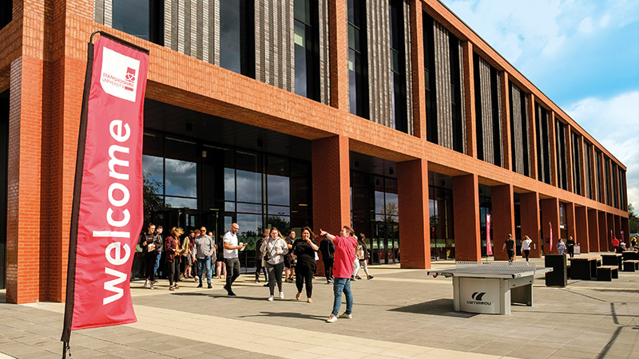
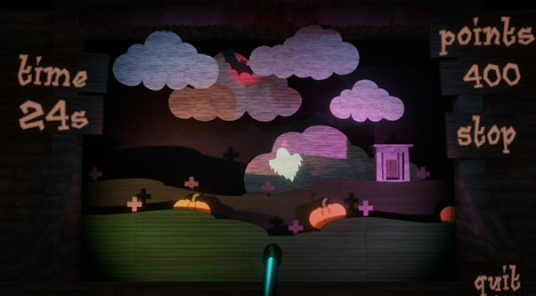

About

Education:
• BSc (Hons): Computer Games Development.
At Staffordshire University I am Currently at Level 4, studying to reach a Bachelors Degree by 2026.
The Modules I am studying at the moment Inlcude:
• Rapid Games Prototyping;
• Games Engine Creation;
• Fundamentals of Games and Graphics System Development;
• And, Professional Developoment in Industry;
• Extended Diploma in Information and Technnology.
At Newcastle College (NSCG) I completed an IT BTEC Course immediately after Highschool where I studied a various amount of Modules that cover a large Portion of the Industry.
•I achieve a D*D*D at the end of my 2 year course.
• GCSEs.
At Kidsgrove Secondary School I Passed all of my GCSEs with an average Grade of 7 (A/B in Old Curriculum).
The Subjects I took were:
• 8's - Mathematics, Physics, & Art (Fine Arts);
• 7's - Geography, Biology, & Computer Science;
• 6's - Chemistry, English Literature, English Language;
Portfolio

08/22 - Games Jam - Spooky Shooter
This Game was made by myself, Morgan Bailey, & Scott Lee in the Staffordshire University Welcome Week Games Jam.
The was a lot of freedom with what game we could build and we decided to go for a Carnival Minigame like Duck Shooter.
A big part of the Games Jam was learning how to work with people on a Programming Project, figuring out what everyone's Skills are and how we could best Utilise everyone's anilities to create a good Game.
It was a lot of fun and the resulting Game we were very proud of.

11/22 - Prototype - Side-Scroller-Shooter
This Side Scroller Prototype was the first Game I developed at Staffordshire University.
It is a very simple Game of survival, you play as a solitary Spaceship, attacking and Defending against Waves of Enemy Ships.
The Main function I was Prototyping was Basic AI. I had never attempted even the simplest of Enemy driving AI and thought it would be a good place to start.
It was a great learning Experience even if I did it the long winded way.
11/22 - MiniGame - Pac-Man Based MiniGame
This MiniGame was the first 2D OOP game I had ever built, and made it as part of my Coursework at Staffordshire University
It is just a basic Maze Game where the player has to collect Objects and avoid the Enemies.
The main feature being learnt during this Project was Memory Management, focusing on how to optimise each and every aspect of the Game.
Contact

No idea what to be put here.